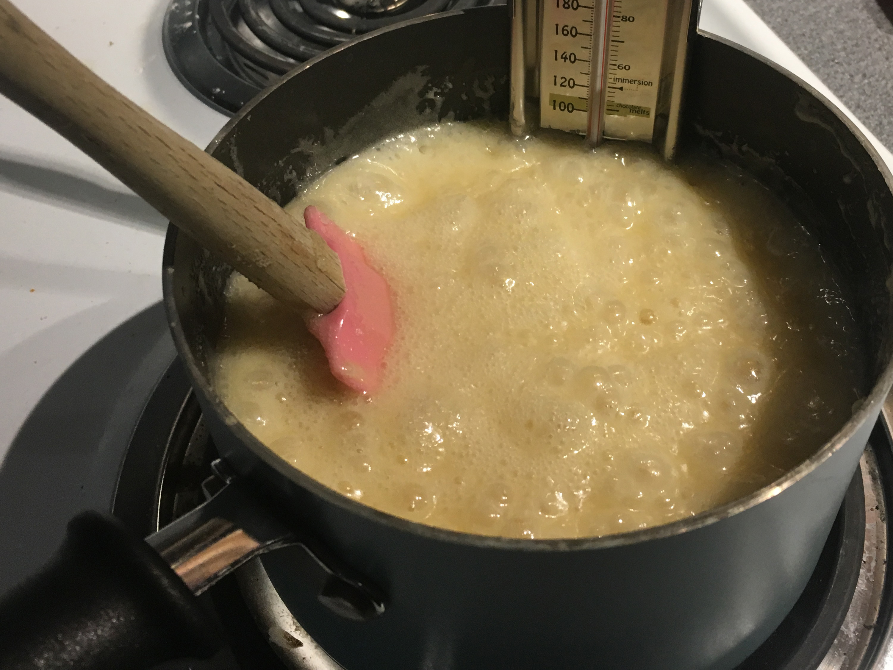
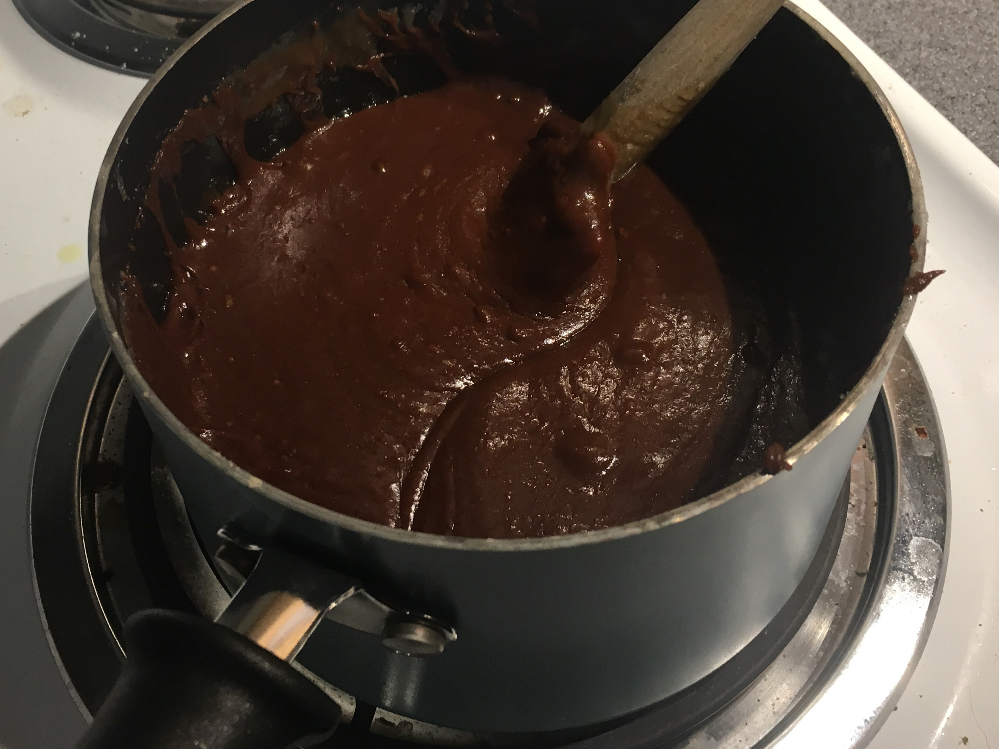
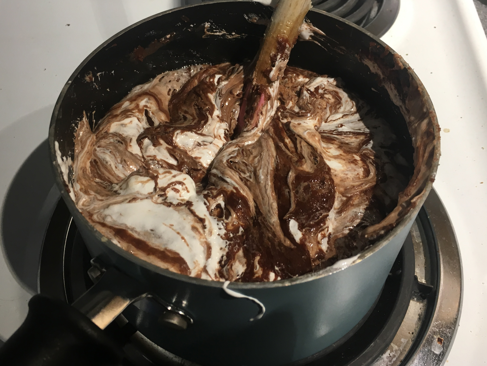
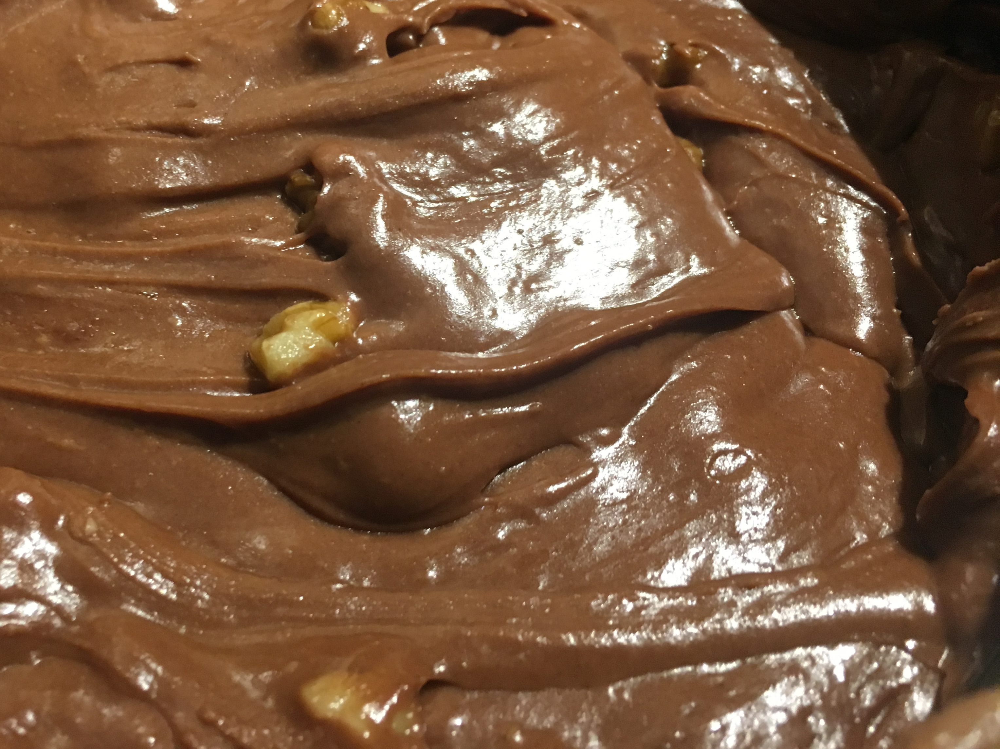

instructions
Prepare a 9x13 pan with butter from wrappers or a very light coating of cooking oil. Set aside.
Combine sugar, butter & evaporated milk in 2 quart sauce pan, stir and heat to 234°F.

Use a candy thermometer and avoid overcooking (it makes the fudge brittle and crumbly). It will boil and bubble a bit, don’t get this on you!
Remove from heat and immediately stir in chocolate chips.

When chips are melted and the mix is a smooth consistency, add vanilla and stir well, then stir in entire contents of marshmallow crème, until well incorporated, smooth and creamy.

Add your nuts and mix them in decently.

Use a nice heat resistant rubber/silicone spatula to scrape the sauce pan into the rectangular pan (but not too cleanly, save some in the pan and on spatula to taste immediately…), spread it to cover the bottom of pan. I sometimes spin the pan on the countertop to push contents to the corners and even out the fudge. Set aside to cool.

When cool, you can pop out the entire slab (metal pans are easier than glass in this regard) onto a cutting board and divide using a French Chef’s knife… maybe a pizza wheel will work. Keep knife clean with hot water. Use a chopping action to ensure you cut through the nuts.
I learned of this recipe from my old friend Tom while in graduate school. He used to make fudge to give as Christmas gifts each year. Frugal and delicious. I’ve improvised over the years with mint flavoring or even mint chocolate chips (if you can find them), no nuts, Reese’s peanut butter chips, and so on.
Enjoy and share.
Love,
-Dad